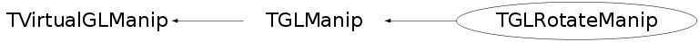

class TGLRotateManip: public TGLManip
Rotate manipulator - attaches to physical shape and draws local axes widgets - rings drawn from attached physical center, in plane defined by axis. User can mouse over (turns yellow) and L click/drag to rotate attached physical round the ring center. Widgets use standard 3D package axes colours: X red, Y green, Z blue.
Function Members (Methods)
public:
| TGLRotateManip() | |
| TGLRotateManip(TGLPhysicalShape* shape) | |
| TGLRotateManip(const TGLRotateManip&) | |
| virtual | ~TGLRotateManip() |
| void | TGLManip::Attach(TGLPhysicalShape* shape) |
| static TClass* | Class() |
| virtual void | Draw(const TGLCamera& camera) const |
| Bool_t | TGLManip::GetActive() const |
| TGLPhysicalShape* | TGLManip::GetAttached() const |
| UInt_t | TGLManip::GetSelectedWidget() const |
| virtual Bool_t | HandleButton(const Event_t& event, const TGLCamera& camera) |
| virtual Bool_t | HandleMotion(const Event_t& event, const TGLCamera& camera) |
| virtual TClass* | IsA() const |
| virtual Bool_t | TGLManip::Select(const TGLCamera&, const TGLRect&, const TGLBoundingBox&) |
| void | TGLManip::SetActive(Bool_t a) |
| void | TGLManip::SetSelectedWidget(UInt_t s) |
| virtual void | ShowMembers(TMemberInspector& insp) |
| virtual void | Streamer(TBuffer& b) |
| void | StreamerNVirtual(TBuffer& b) |
protected:
| static Double_t | Angle(const TGLVector3& v1, const TGLVector3& v2) |
| static Double_t | Angle(const TGLVector3& v1, const TGLVector3& v2, const TGLVector3& ref) |
| void | TGLManip::CalcDrawScale(const TGLBoundingBox& box, const TGLCamera& camera, Double_t& base, TGLVector3* axis) const |
| const UChar_t* | TGLManip::ColorFor(UInt_t widget) const |
| TGLManip& | TGLManip::operator=(const TGLManip&) |
private:
| Double_t | CalculateAngleDelta(const TPoint& mouse, const TGLCamera& camera) |
| TGLLine3 | CalculateRingLine(const TPoint& mouse, const TGLCamera& camera) const |
| void | DrawAxisRing(const TGLVertex3& origin, const TGLVector3& axis, Double_t radius, Float_t* rgba) const |
Data Members
protected:
| Bool_t | TGLManip::fActive | ! manipulator is active? |
| TPoint | TGLManip::fFirstMouse | ! first (start) mouse position (in WINDOW coords) |
| TPoint | TGLManip::fLastMouse | ! last (latest) mouse position (in WINDOW coords) |
| UInt_t | TGLManip::fSelectedWidget | ! active width (axis) component |
| TGLPhysicalShape* | TGLManip::fShape | ! manipulated shape |
Class Charts
{kind=link}
{kind=link}
{kind=link}
{kind=link}

Function documentation
Double_t Angle(const TGLVector3& v1, const TGLVector3& v2)
Calculate unsigned angle between vectors v1 and v2
Double_t Angle(const TGLVector3& v1, const TGLVector3& v2, const TGLVector3& ref)
Calculate signed angle between vectors v1 and v2, using ref to define right handed coord system If v1.v2 parallel to ref vector: +ive for clockwise, -ive for anticlockwise If v1.v2 antiparallel to ref vector: -ive for clockwise, +ive for anticlockwise
TGLRotateManip(TGLPhysicalShape* shape)
Construct rotation manipulator bound to TGLPhysicalShape 'shape'.
void Draw(const TGLCamera& camera) const
Draw rotate manipulator - axis rings drawn from attached physical center, in plane defined by axis as normal, in red(X), green(Y) and blue(Z), with white center sphere. If selected widget (mouse over) this is drawn in active colour (yellow).
Bool_t HandleButton(const Event_t& event, const TGLCamera& camera)
Bool_t HandleMotion(const Event_t& event, const TGLCamera& camera)
Double_t CalculateAngleDelta(const TPoint& mouse, const TGLCamera& camera)
Calculate angle delta for rotation based on new mouse position.
TGLLine3 CalculateRingLine(const TPoint& mouse, const TGLCamera& camera) const
Calculated interaction line between 'mouse' viewport point, and current selected widget (ring), under supplied 'camera' projection.
void DrawAxisRing(const TGLVertex3& origin, const TGLVector3& axis, Double_t radius, Float_t* rgba) const